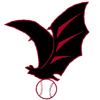

Fantasy News Rotoworld Baseball FanGraphs Baseball HQ Fantasy Rundown RotoProfessor CBS FantasyNews Project Prospect Draft Help DK Nation (DFS)
MLB The Show Nation
Daily News Denver Post Post-Dispatch - Cards MLB Standings MLB Statistics MLB Transactions Minor League Transactions DraftHelp Depth Charts Roster Resource Injury Report Twitter MLB List
MLB Starting Lineups Fantasy Pros MyPlaybook
Blogs/FeedsPurple Row Blog Rox Pile Viva El Birdos Baseball Musings Hardball Times